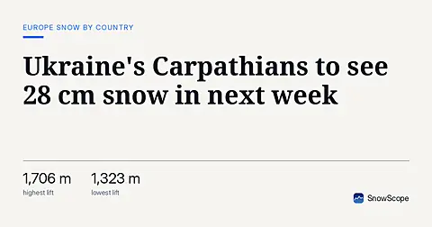

Ukraine snow report: snow depth, new snow and the week ahead
In Ukraine's Carpathians about 17,510 km² of high ground is white today, 99 % of the country's mapped mountains and hills. That is 440 km² more than yesterday. The deepest resort is Драгобрат with 22 cm on its upper slopes. Up to 10 cm of new snow could fall on the snowiest slopes in the week ahead.
See the live snow forecast for Драгобрат in the SnowScope appSnow depth, powder alerts and the 3D map, free.Today at a glance
| White area | 17,510 km² |
|---|---|
| Share of the high ground | 99 % |
| Most new snow in 24 h | 4 cm |
| Most new snow in 3 days | 13 cm |
| Next 3 days (snowiest slopes) | 10 cm |
| Next 7 days | 10 cm |
| Mostly white from | 500 m |
| Resorts with snow on top | 16 of 20 |
The last seven days
On 20 November about 1,100 km² was white; today it is 17,510 km².
The snow cover grew by 16,410 km² over these days.
The biggest three-day snowfall of the period reached 16 cm (to 22 November).
Snowiest resorts today
Драгобрат leads with 22 cm on its upper slopes.
Then come Pylypets (11 cm), Slavske (9 cm), Slavske (9 cm) and Буковель (9 cm).
| Resort | Upper slopes | New, 3 days | Next 3 days | Top |
|---|---|---|---|---|
| Драгобрат | 22 cm | 13 cm | 8 cm | 1,706 m |
| Pylypets | 11 cm | 10 cm | 3 cm | 1,165 m |
| Slavske | 9 cm | 11 cm | 4 cm | 1,213 m |
| Slavske | 9 cm | 10 cm | 4 cm | 1,082 m |
| Буковель | 9 cm | 8 cm | 9 cm | 1,370 m |
Where the snow is coming next
Up to 10 cm is expected on the snowiest slopes in the next three days, and up to 10 cm over the week.
The snowiest day looks like Friday 27 November, with up to 8 cm.
The last three days brought the most fresh snow to Chornohora and the Gorgany.
Snow by height
Height by height: 500-1,000 m: 7 cm on average, 99 % white; 1,000-1,500 m: 10 cm on average, 100 % white; 1,500-2,000 m: 20 cm on average, 100 % white.
Most of the ground is white from about 500 m up.
Planning a trip
Above 500 m the ground is almost fully white (99 % covered), so runs up there have a continuous base.
The resorts with the highest lifts are the safest bet: Драгобрат (1,706 m), Буковель (1,370 m) and Slavske (1,213 m).
If you can choose the day, go after Friday 27 November: the fresh snow then has time to settle and the roads to be cleared.
Day by day
- Thursday 26 November · 17,510 km² white, up to 13 cm of new snow in three days, deepest Драгобрат (22 cm)
- Wednesday 25 November · 16,870 km² white, up to 12 cm of new snow in three days, deepest Драгобрат (20 cm)
- Tuesday 24 November · 17,600 km² white, up to 13 cm of new snow in three days, deepest Драгобрат (20 cm)
- Monday 23 November · 15,010 km² white, up to 13 cm of new snow in three days, deepest Драгобрат (17 cm)
- Sunday 22 November · 11,820 km² white, up to 16 cm of new snow in three days, deepest Драгобрат (19 cm) · Where did the 16 cm fall in Ukraine? Fresh snow by mountain range
- Saturday 21 November · 9,120 km² white, up to 14 cm of new snow in three days, deepest Драгобрат (17 cm) · Ukraine's Carpathians gain 3,080 km² of snow cover in one week
- Friday 20 November · 1,100 km² white, up to 7 cm of new snow in three days, deepest Драгобрат (11 cm)
Questions and answers
Is there snow in Ukraine's Carpathians right now?
Yes. About 17,510 km² of high ground is white, 99 % of the mapped mountains. The deepest resort is Драгобрат with 22 cm on its upper slopes.
Where is the most snow in Ukraine's Carpathians today?
Драгобрат leads with 22 cm on its upper slopes. Then come Pylypets (11 cm), Slavske (9 cm) and Slavske (9 cm).
Will it snow in Ukraine's Carpathians this week?
Up to 10 cm is expected on the snowiest slopes in the next three days, and up to 10 cm over the week. The snowiest day looks like Friday 27 November, with up to 8 cm.
From what height is there snow in Ukraine's Carpathians?
Most of the ground is white from about 500 m up.
How much new snow fell in Ukraine's Carpathians in the last three days?
Up to 13 cm on the snowiest slopes, 4 cm of it in the last 24 hours. At least 5 cm fell over some 15,090 km². The last three days brought the most fresh snow to Chornohora and the Gorgany.
How many ski resorts in Ukraine's Carpathians have snow?
16 of the 20 resorts we follow have snow on their upper slopes today. Snow on top does not mean the lifts are open: check the resort before you go.
Stories about Ukraine

72-hour snowfall mapped across Ukrainian ranges: Chornohora led with 24 cm, Gorgany 19 cm, Borzhava 14 cm. Data from 2026-11-22.

Ukraine saw snow cover jump from 6,040 to 9,120 km² in seven days. Драгобрат leads with 17 cm depth; heavy snow forecast through November.

Heavy snow is forecast for Ukraine's mountains over the next 7 days, with up to 28 cm expected. Data from 2026-11-19.